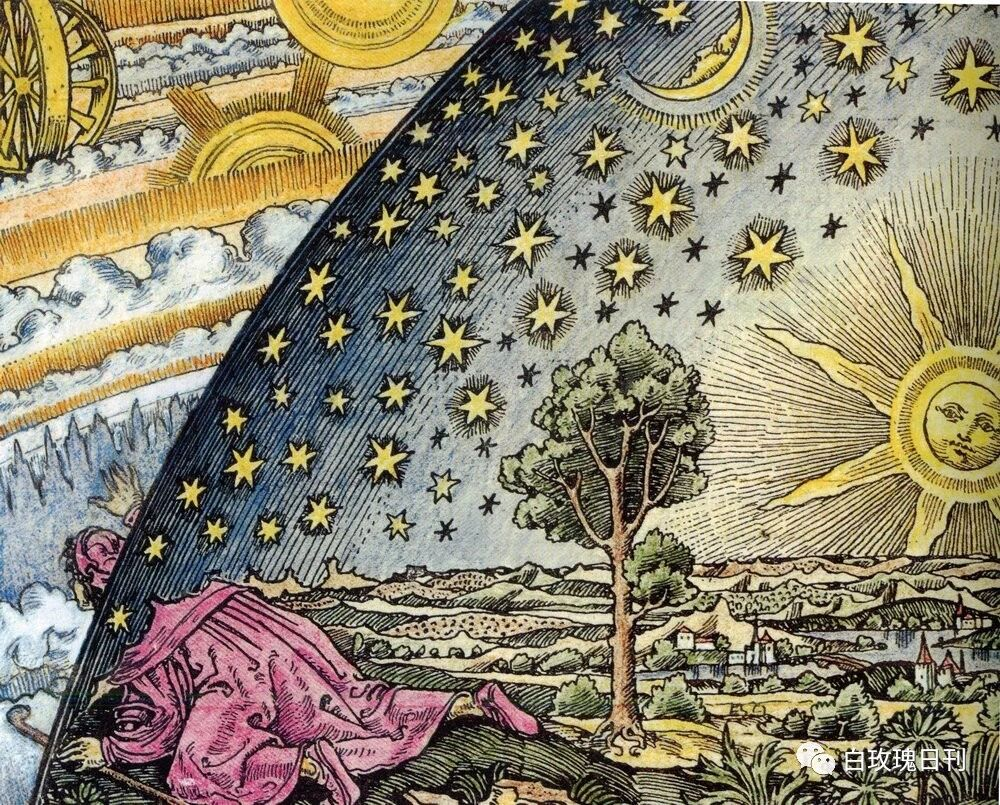
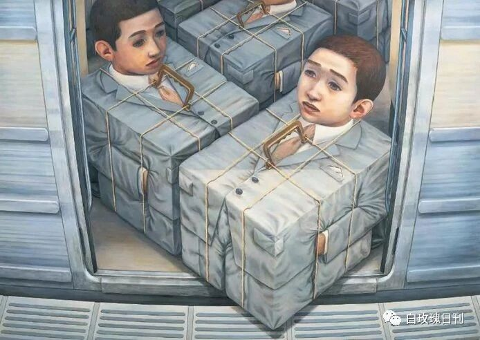

The Disappearance of "the Nearby"
Live in the present. Carpe diem.
— Horace
Do you know your neighbours?
Do you know the history of your own school?
If a stranger near your home asked you, "Is there anywhere around here worth seeing?" — could you answer?
If you could, then your "nearby" has not disappeared. If not, please read on.
All of these questions come down to the same one: why do modern people feel so little about the world immediately around them — sometimes nothing at all? The answer, it seems, has to do with a shift in how human beings experience time.
The Sense of Time
For as long as humans have studied this strange thing called time, we have been the blind men touching the elephant. For Kant, we can only apprehend time through the motions and changes of things in the world. Time is an a priori concept — we have the experience of it, but we cannot perceive it directly. We can only express time through the appearances of things, which is to say, indirectly: "at the hour of the rooster's cry," "the time it takes a stick of incense to burn." In this sense, we were using human activity to mark out time itself.
Then the clock was invented, and "rooster-cry" and "sundown" became "six in the morning" and "five in the afternoon." The abstraction of time deepened, and our own sense of time sharpened in step with it, until the relationship inverted: now time itself regulates our behaviour. What you should be doing at which hour. We carve life into fragments of time, and we chase immediacy more and more. A takeaway five minutes late makes us restless; a teacher seeing a student even one minute late flies into a temper.
This immediacy is also wearing down our capacity to think. Our emotions can storm through us with all the force of a cloudburst — that is part of being "immediate" — but thinking needs time to settle. If people only want to reach their goals fast, the process of thinking disappears. It is only in the quiet, unhurried moments that genuine reflection becomes possible. Are we becoming more feral as a result? Not implausible. On today's internet, a certain "moral sentiment" swells to unprecedented heights — waves of extreme sympathy, flashes of indignation — and then, within a single day, all of it is spent and gone.
"To comment on others is human nature, and all the more so for ordinary people like us; yet we are only grieving for their misfortune in the moment of commenting. Afterwards, the ice cream is still sweet, and so are the strawberries."
The Outsider
Another reason these feelings vanish so fast is that we can only be the world's servants. We cannot participate in it, we cannot change it — we can only be governed by it. And so some of us want to escape. We become outsiders. This escape is not necessarily a bad thing: a certain distance from life is often what allows us to see its beauty, to keep from being wholly ruled by the world and instead look down on it from above. But in the end we can only detach from the world completely — while still, in secret, being controlled by it.
This flight also explains the phenomenon we started with: that modern people feel so little about the world around them, and often know nothing of it. Because if you cannot change a thing, what does it have to do with you? You are merely ruled by the world, and otherwise unrelated to it.

And so escape and immediacy together leave us indifferent to the world. When a national-scale event happens, we feel a moment's excitement and then stop caring; we solve nothing. We feel that excitement precisely because, under the law of immediacy, one can "pick a side" without thinking. Every topic splits into two camps, but no one applies the dialectic — finding the thesis, the antithesis, and then the synthesis — and reasons calmly through it.
Why should reason be needed? Because most of us are outsiders. We have never imagined making any real change. Yes, we have parties, we have civic groups, but a great distance still lies between ruler and ruled. Ordinary people simply live their own lives under the spell of immediacy, cursing or praising something on their WeChat Moments or Weibo from time to time, without ever thinking to alter anything.

The Sense of Society
This comes in part from the thought of Confucius: the ruler is always the ruler, the people always the people, and the people are to obey. The people therefore think only of being themselves; they never think of changing anything. Today, of course, an ordinary person can become a civil servant and rise through the ranks to govern — but the moment they enter the "system," they become a new generation of ruler. This polarization between ruler and ruled is produced by immediacy and by escape. The people feel no connection to those who govern, and so tend only to their small private worlds. There is no effective civic body or party through which to act. The outcome, naturally, is autocracy.
Like time, the categories of "ruler" and "ruled" were defined by rulers — yet it is we, the people, who let ourselves be confined by them. We feel the immediacy of society around us, and then we become outsiders. We stop caring about changing society; we shout aimlessly online to perform our political concern; only a small few actually set out to change anything, because the rest of us have no means to. The sense of time is a priori, so we cannot change it. But what of a society defined by its rulers? Do we end up with only a "here" and a "there," but no nearby?